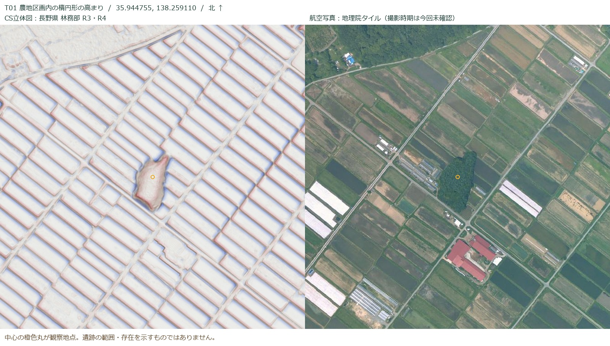
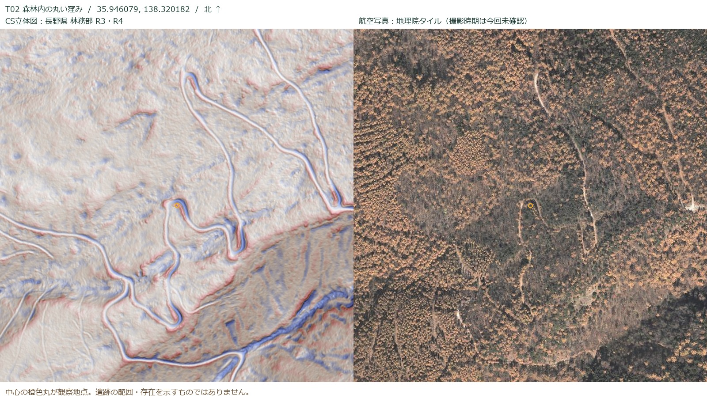
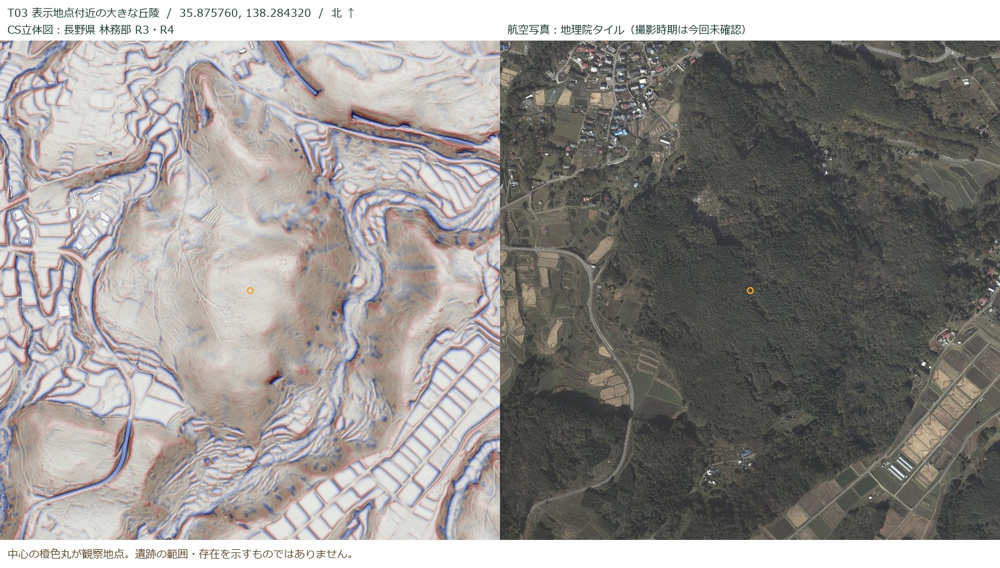

このデータの範囲には、公開資料で確認できる遺跡があります。
新たな古墳・遺跡の発見を確定する結果は得られていません。
28 / 28図郭の概観確認42取得した遺跡抄録32公開座標の代表点1成因不明の観察地点
調査日：2026年9月30日。対象は利用者指定の「富士見町.zip」全28画像。画像の有効画素面積は約152.5km²（透過部分を除外）。町境で切り抜いた面積ではなく、町全域の完全な収録を保証する値でもありません。
全28図郭を1200×1000pxの概観画像（約2.5m/表示画素）で目視確認。選択した3地点を拡大し地理院航空写真と照合。全域を元の1m間隔で精査したものではありません。 AIによる机上の一次確認であり、考古学の専門家による現地確認・判定は行っていません。画像だけで地下の遺跡や年代を決めることはできません。
公開資料から確実にいえること
町内には縄文集落をはじめとする既知の遺跡があります。曽利遺跡の2025年報告は、2021〜2023年の調査で住居址20軒などを確認したと記載しています。地形からの推測とは別に、発掘記録に基づく存在確認です。曽利遺跡報告書
文化庁の現行データベースでは、2025年9月18日の追加指定・名称変更後の名称は「井戸尻遺跡群 井戸尻遺跡 曽利遺跡」です。町の指定文化財一覧（令和2年3月1日現在）には先達城址・狼落しなども載ります。ただし、この一覧の「指定基準」の古墳という語を、個々の遺跡が古墳である証拠には使っていません。文化庁 ／ 町の一覧
拡大して確認した3地点
T01 農地区画内の楕円形の高まり
要確認・成因不明
農地内に独立した不整な楕円形の高まりが見える。航空写真では樹林が残る場所と一致する。自然の残丘、耕地造成時に残された地形、人工の盛土の区別は未確定。周溝・埋葬施設を示す根拠は今回得られていない。
町の遺跡分布図と古い航空写真で照合し、DEMで周囲との比高と断面を確認する。古墳として登録・判定した地点ではない。
35.944755, 138.259110 地図へ

T02 丸い窪みに見えた林道の折り返し
林道形状と整合
概観時に丸い窪みに見えた部分は、拡大すると連続する道のヘアピンの端に当たる。航空写真にも同じ曲がり方の道が写る。遺跡を示す積極的根拠としては採用しない。
林道の造成時期は未確認。周辺に遺跡がないことを意味しない。
35.946079, 138.320182 地図へ

T03 表示地点付近の大きな丘陵
丘陵形状・未判定
最初に表示されていた地点付近。数百m規模で続く丘陵であり、斜面の谷や段差と一体になっている。航空写真では主に樹林。丘全体を古墳とみなす根拠は得られない。
丘陵上の小規模遺構や地下遺構はこの確認では判定できない。町の分布図との範囲照合が必要。
35.875760, 138.284320 地図へ

地図に重ねた公開記録
28報告書の抄録から取得した42記録のうち、世界測地系座標が掲載された32記録（遺跡名を整理すると26名称）を表示。町内の遺跡総数ではありません。同じ遺跡の別調査を含みます。空白地域を「遺跡なし」と判断できません。
すべて抄録の代表点であり、包蔵地境界・調査区境界・遺構中心を示すものではありません。日本測地系の値をそのまま重ねず、総覧に掲載された世界測地系10進値を使用しました。坪平遺跡は資料間の位置差が500mを超えるため、両記録を残して「位置要照合」と表示しています。
地図ソフト用の地点データを保存 ／ 調査メモ一式を保存
座標なしとして表示を見送った記録：御所平、大花北遺跡、小母沢遺跡、森平遺跡、御射山遺跡、机原三本松遺跡、井戸尻遺跡 第3次、御柱尾根遺跡、御所平遺跡、御所平北遺跡。これらは記録の存在を確認したもので、地図上に推定座標は置いていません。
28図郭の確認記録
いずれも概観確認。個別遺構の網羅的な探索ではありません。山地の小さな窪み、土塁、植生下の微地形などの見落としはあり得ます。各図名から確認用画像を開けます。
残る確認と判断の限界
- 町の「埋蔵文化財分布地図2015」の掲載ページには地図本体がなく、町内の既知遺跡全範囲との重ね合わせは未実施。T01も、既知遺跡に含まれるかは判定できていません。書誌情報
- CS立体図は色付き地形画像です。今回の画像には標高数値が入っておらず、比高・勾配・断面を測っていません。次に進める場合は元のDEMを使い、T01の形を定量確認します。
- 航空写真は地理院の標準配信画像を比較。撮影年の確認や旧版航空写真との時系列比較は未実施です。R3・R4の地形との変化を検出したとはいえません。
- 新規遺跡の判定には、既知記録・土地利用履歴・詳細地形と現地所見の照合が必要です。この調査結果は遺跡の不存在証明や行政上の判定に使うものではありません。
出典・再現情報